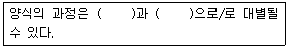

수산양식기사 (2014-03-02 기출문제)
1과목: 어류양식학
1. 인공수정 된 자주복 알의 대량 부화에 대한 설명으로 틀린 것은?(문제 오류로 실제시험에서는 모두 정답 처리 되었습니다. 여기서는 가답안인 1번을 누르면 정답 처리 됩니다.)
- 바닥면적이 넓은 수조(100~300ℓ)에서 통기식 지수상태로 부화시킨다.
- 20메쉬(mesh)의 화학섬유망에 알을 놓아 유슈식 수조 속에 쌓아놓고 부화시킨다.
- 플라스크 같은 구형의 용기를 사용하여 알이 항상 유동상태에 놓이도록 하여 부화시킨다.
- 알테미아 부화기에 넣어서 부화시킨다.
(정답률: 76%)

2. 평균 100g 되는 어류종묘 10000마리에 펠렛사료 6000㎏을 공급하여 100%생존하였으며, 평균 600g의 어류를 수확하였다면 이때의 사료계수는?
- 0.9
- 1.2
- 1.8
- 2.4
(정답률: 86%)
3. 방어 양식에서 좋은 종묘를 구하는데 유의할 점이 아닌것은?
- 겉보기에 둘글둥글하게 살이 쪄있는 것이어야 한다.
- 몸 빛깔은 청록색을 띠고 있는 것이어야 한다.
- 사육 가두리 내에서 다른 개체와 떼를 지어서 정상적인 유영을 하고 있는 것이어야 한다.
- 어체의 크기가 고른 것이어야 한다.
(정답률: 92%)
4. 은어의 종묘 생산 시 주된 먹이로 이용되는 것은?
- Monochrysis sp.
- Navicula sp.
- Chlorella sp.
- Brachionus sp.
(정답률: 82%)
5. 넙치를 육상수조에서 양성하려고 할 때 고려해야 할 장소선정에 관한 내용 중 알맞지 못한 것은?
- 가능한 장기간 동안 적수온 범위의 해수를 취수할 수있는 곳
- 취수되는 해수는 용존산소가 높고, 하천의 유입 등에 의해서 염분의 급격한 저하가 없는 곳
- 적조나 현탁물질 등의 오염물질이 적고 깨끗한 곳
- 해면과의 수위차가 큰 곳
(정답률: 90%)
6. 조피볼락에서 먹이를 처음 공급하는 시기는?
- 출산 직후
- 출산 5일 후
- 출산 19일 후
- 출산 30일 후
(정답률: 85%)
7. 다음 괄호 안에 적합한 용어는?

- 어미생산 - 양성
- 어미생산 - 방류
- 종묘생산 - 양성
- 종묘생산 - 방류
(정답률: 90%)
8. 영양 염류가 충분히 있어야 생산이 많아지는 양식법은?
- 넙치의 유수식 양식
- 틸라피아의 순환여과식 양식
- 백련어의 지중 양식
- 송어의 가두리 양식
(정답률: 74%)
9. 해산어 인공종묘 생산 시 빵효모만으로 배양한 윤충의 경우 영양강화가 필요한 가장 큰 이유는?
- 필수지방산의 보충을 위하여
- 단백질의 보충을 위하여
- 탄수화물의 보충을 위하여
- 미네랄의 보충을 위하여
(정답률: 87%)
10. 뱀장어를 순환여과식 사육과 관련한 내용으로 가장 거리가 먼 것은?
- 사육시설의 기능이 연속적인 동력 가동에 의존하므로 정전 때와 펌프 등 기계고장 때의 긴급 대비시설이 선행되어야 한다.
- 물이 안정되어 있으므로 순환여과식 양성시설에 처음 입식부터 많은 양의 수용을 하면 안 된다.
- 사육 도중에 먹이의 양을 갑자기 증가시키면 안 된다.
- 여과능력이 한계점에 도달하고 수질악화가 증대될 경우에는 물의 전량 또는 대부분을 일주일에 한 번씩 주기적으로 교환하여야 한다.
(정답률: 78%)
11. 미꾸리의 초기 종묘 육성에 대한 설명이 가장 적합한 것은?
- 부화 직후 3~4㎜인 자어를 약 10일간 양성하여 5~10㎜로 기르는 과정이다.
- 수조 수용 시 m2당 200~400마리를 수용한다.
- 초기 종묘의 육성 시 되도록 20m2 이상 되는 큰 수조를 사용한다.
- 부화 후 3일이 지나면 크럼블 사료를 공급한다.
(정답률: 67%)
12. 다음 어종 중 육상수조 양식에 가장 알맞은 것은?
- 방어
- 복어
- 넙치
- 참돔
(정답률: 86%)
13. 살아있는 수산동물을 적절한 시설안에서 일시적으로 보관하는 일은?
- 축양
- 배양
- 양성
- 종묘생산
(정답률: 92%)
14. 무지개송어 양식에서 알 10만개를 부화하는데 필요한 주수량은? (단, 주입수의 용존산소량 : 1ℓ 당 8㎖, 배출수의 용존산소량 : 1ℓ 당 5㎖, 10만개가 소비하는 산소량 : 1시간당 0.5ℓ)
- 약 166ℓ/h
- 약 100ℓ/h
- 약 62ℓ/h
- 약 40ℓ/h
(정답률: 76%)
15. 무지개송어의 사육 관리가 틀린 것은?
- 사육수온을 15℃ 내외로 유지시켜 준다.
- 용존산소량은 적어도 7㎎/ℓ 이상 유지시켜준다.
- 적정 pH범위는 6.7~8.2이다.
- 수온 변화로 산란시기를 조절한다.
(정답률: 71%)
16. 물을 교환하지 않고 산소를 보충하지 않은 상태의 정수식 목에서 잉어의 최대 수용량은?
- 400~500g/m2
- 700~800g/m2
- 1000~1100g/m2
- 1300~1400g/m2
(정답률: 83%)
17. 지용성 비타민이 아닌 것은?
- 비타민 A
- 비타민 C
- 비타민 D
- 비타민 E
(정답률: 87%)
18. 양식종을 선택하는데 있어서 고려하여야 할 선택 조건 중 그 성격이 다른 것은?
- 몸이 건강하여 병에 잘 견딜 것
- 성장이 빠를 것
- 상품으로서 맛, 빛깔 등의 품질이 좋을 것
- 사육 기술이 확립되어 있을 것
(정답률: 79%)
19. 해산어류의 양성과 관련된 일반적 특징으로 틀린 것은?
- 방어 종묘 채집시 5~6월에 어획되는 8~50g정도의 것이 가장 좋다.
- 넙치는 전장 5~6㎝의 것을 종묘로 하는 것이 좋다.
- 참돔은 5℃ 이하의 수온에서 약 80% 이상 월동 가능하다.
- 자주복의 성장은 1년째에 수온이 16℃로 저하될 때까지의 기간이 왕성하므로 이 기간이 긴 곳을 양성장으로 택하는 것이 좋다.
(정답률: 74%)
20. 다음은 사료의 첨가물 중 연어, 송어류의 체색이나 육질의 색을 좋게 하기 위해 사용되는 착색제는?
- CMC
- α-토코페롤
- 새우가루
- 글리신
(정답률: 90%)
2과목: 무척추동물양식학
21. 전복류의 성숙에 대한 설명 중 알맞은 것은?
- 전복의 성숙된 난소는 선홍색이며 정소는 황백색이다.
- 전복의 성숙에 가장 큰 영향을 미치는 요인은 염분이다.
- 까막전복의 성숙 초기 수온은 5.3℃이다.
- 참전복의 성숙에 필요한 적산수온은 3500℃이다.
(정답률: 73%)
22. 참문어의 부유 유생기 먹이로서 가장 알맞은 것은?
- 윤충류
- 조개류의 유생
- 알테미아(Artemia nauplii)
- 나비큘라(Navicula sp.)
(정답률: 56%)
23. 피조개 종묘생산을 위한 유생용 먹이와 가장 거리가 먼 것은?
- Chaetoceros simplex
- Cyclotella nana
- Isochrysis sp.
- Brachionus plicatilis
(정답률: 69%)
24. 다음 조개류 중 생활사에서 부착생활기를 갖지 않는 종은?
- 피조개
- 진주조개
- 참가리비
- 바지락
(정답률: 75%)
25. 피조개의 양식단계를 4개로 나눌 때 3번째에 오는 것은?
- 양성관리
- 종패관리
- 방양
- 채묘
(정답률: 65%)
26. 대합(백학)의 이동이 많은 각장의 크기는?
- 1.0~2.0㎝
- 3.0~5.0㎝
- 7.0~9.0㎝
- 10㎝ 내외
(정답률: 76%)
27. 참가리비의 양성관리 방법 중 옳지 않은 것은?
- 수온이 높은 양성장에서느 여름철에 깊은 수층에 수하한다.
- 수온이 낮은 양성장에서는 겨울철에 깊은 수층에 수하한다.
- 부착생물이 많이 착생하는 시기에는 깊은 수층에 수하시켜 관리한다.
- 부착생물 제거는 참굴과 같이 노출, 온탕욕 및 담수욕으로 하는 것이 좋다.
(정답률: 66%)
28. 대하 발생과정 중 부화하여 8번 탈피를 하였을 때의 유생단계는?
- Nauplius
- Zoea
- Mysis
- Post-larva
(정답률: 72%)
29. 큰우럭의 종묘생산과 양성에 관한 내용 중 맞는 것은?
- 부착력이 강하기 때문에 부착기로 채묘한다.
- 각장 5㎜ 이상이 되면 방류용 종묘로 쓸 수 있다.
- 저질은 연안 개흙질인 곳이 좋으며, 개흙질의 비율은 약 7% 이하인 곳이 알맞다.
- 방양 시 종묘의 방양밀도는 1m2당 50~100개체가 가장 알맞다.
(정답률: 60%)
30. 무척추동물 중 돌리올라리아(doliolaria)의 유생기를 가지는 종은?
- 수랑
- 해삼
- 따개비
- 불가사리
(정답률: 84%)
31. 굴 유생 부착에 가장 많은 영향을 미치는 환경 요인은?
- 광선
- 염분
- 수온
- 먹이
(정답률: 48%)
32. 다음 중 한해성으로 제주도에 서식하는 전복이 아닌것은?
- 참전복
- 까막전복
- 말전복
- 오분자기
(정답률: 75%)
33. 기수(汽水)의 염분농도 변화 범위기준은?
- 0.5‰이하
- 0.5~25‰
- 10~20‰
- 40~25‰
(정답률: 80%)
34. 다음 중 종묘 방양에 대한 설명으로 틀린 것은?
- 양성계획에 따라 알맞은 방양시기와 양을 결정해야 한다.
- 종묘의 방양은 수온이 상승할 때를 택한다.
- 방양량은 양성법 및 양성장의 환경조건을 따른다.
- 부착성 동물은 유영 동물에 비해 방양 밀도가 낮다.
(정답률: 80%)
35. 담치류의 생태에 대한 설명으로 가장 거리가 먼 것은?
- 담치류는 부착성 동물이다.
- 지중해담치는 원래 한해성이지만 강한 번식력 등으로 분포수역이 확대되었다.
- 참담치는 지중해담치에 비해 저염분성이며 천해성 종류이다.
- 참담치의 성숙한 암컷 생식소 색은 자색이며 수컷은 담황색이다.
(정답률: 65%)
36. 수하식 양식이 가장 많이 이루어지는 수심층은?
- 조간대
- 상천해대
- 중천해대
- 하천해대
(정답률: 67%)
37. 참굴 암컷의 생식세포 분열증식이 시작되는 수온기준은?
- 8℃ 이상
- 10℃ 이상
- 12℃ 이하
- 14℃ 이하
(정답률: 63%)
38. 다음 중 새우류의 변태과정이 올바른 순서대로 나열된 것은?
- 노플리우스 - 조에아 - 미시스 - 포스트 라바
- 노플리우스 - 미시스 - 조에아 - 포스트 라바
- 노플리우스 - 미시스 - 메갈로파 - 포스트 라바
- 노플리우스 - 메갈로파 - 미시스 - 포스트 라바
(정답률: 85%)
39. 참굴의 수하식 양성장의 조건에 관한 설명으로 가장 거리가 먼 것은?
- 조류의 유속은 1노트 이하가 좋지만 중층이나 하층의 유속이 5㎝/sec 이상이라야 한다.
- 투명도는 보통 4~8m가 정상이다.
- 용존산소량은 여름철이라 하더라도 하층의 양이 2~4㎖/ℓ 이상으로 유지되어야 한다.
- 먹이 생물은 비교적 풍부한 곳이 좋은데, 편모조류가 섞인 곳은 적합하지 않다.
(정답률: 65%)
40. 참가리비 양성에 대한 설명 중 알맞은 것은?
- 바닥양성장은 자갈이나 패각질이 많으며 유속이 빠른 곳이 적당하다.
- 파랑이 심한 곳은 뗏목식 수하양성보다 침설식수하양성이 적합하다.
- 귀매달기 양성은 중층보다 표층을 활용하는 것이 더 효과적이다.
- 편평 칸막이 채롱양성은 관리가 쉬우나 성장과 생존율이 낮다.
(정답률: 72%)
3과목: 해조류양식학
41. 미역의 채묘를 위한 포자엽의 예비작업에 해당되는 사항으로 가장 적합한 것은?
- 고염분처리
- 저온처리
- 담수처리
- 음건처리
(정답률: 78%)
42. 다음 중 청각에 대한 설명으로 옳지 않은 것은?
- 추출물에 강한 항생 및 구충 성분이 들어 있다.
- 세대교번을 한다.
- 유체는 초겨울에 출현하기 시작한다.
- 배우자낭이 출현하는 시기는 초여름에서 초겨울 사이이다.
(정답률: 74%)
43. 다음 중 세대교번하는 종들로 짝 지워진 것은?
- 톳과 납작파래
- 미역과 우뭇가사리
- 모자반과 다시마
- 감태와 청각
(정답률: 79%)
44. 참다시마의 형태를 바르게 설명한 것은?
- 성숙한 잎의 기부는 둥글고 중대부가 매우 넓다.
- 뿌리는 윤생하고 잎은 피침형이다.
- 성숙한 잎의 기부는 쐐기형이고 중대부는 조금 넓다.
- 성숙한 잎의 기부는 난형이고 중대부는 피침형이다.
(정답률: 69%)
45. 김의 인공배양시 1㎝ 내외의 유엽의 생장적온으로 가장 적합한 것은?
- 4~6℃
- 6~8℃
- 11~13℃
- 13~15℃
(정답률: 47%)
46. 미역 가이식시 싹녹음의 원인과 가장 거리가 먼 것은?
- 적조발생
- 큰 조석차(소조 기준)
- 외양수의 침입
- 식해동물 발생
(정답률: 54%)
47. 다음 중 김 조가비사상체의 가장 일반적인 성숙촉진 방법은?
- 연속명기처리
- 단일처리
- 냉장처리
- 시비(施肥)
(정답률: 68%)
48. 꼬시래기의 포자 방출을 유발시키는 방법으로 가장 거리가 먼 것은?
- 모조를 담수에 24시간 담근 후 해수에 옮긴다.
- 2~4시간 음건시킨다.
- 햇볕에 1~2시간 노출시켰다 해수에 넣는다.
- 수온을 10℃ 올려 주었다 하강시킨다.
(정답률: 58%)
49. 톳 양식에서 친승의 수심 조절에 대한 설명이 틀린것은?
- 너무 깊게 관리하면 성장이 늦고 색택이 나쁘다.
- 초기에 수면 가까이 관리하면 종묘의 유실이 많다.
- 깊게 관리하면 성장은 나쁘지만 포복지가 많이 생긴다.
- 해적생물이 많거나 유조가 많은 곳은 좀 깊게 관리한다.
(정답률: 68%)
50. 김의 생활사 중 핵상(核相)이 단상(單相)인 것으로만 짝지어져 있는 것은?
- 엽체, 조과기, 조정기, 각포자
- 조과기, 조정기, 낭과, 과포자
- 중성포자, 과포자, 정자, 조과기
- 사상체, 각포자낭, 각포자, 엽체
(정답률: 70%)
51. 다시마 충실기와 관련한 설명이 옳은 것은?
- 뿌리의 부착력이 매우 약해진다.
- 실용부분은 증대하나 엽장은 차차 짧아진다.
- 엽장, 엽폭, 두께가 모두 최고치로 된다.
- 충실기 직전에 수확한 것이 질이 가장 좋다.
(정답률: 63%)
52. 다시마의 유주자가 방출되는 부위는?
- 조과기
- 포자낭반
- 자성반
- 배우체
(정답률: 75%)
53. 카라기난의 원료가 될 수 있는 해조류는?
- 진두발
- 미역
- 톳
- 청각
(정답률: 80%)
54. 냉장발의 씨발에 이용되는 김 엽체의 가장 적당한 크기는?
- 체장 1㎝ 내외의 엽체
- 체장 3㎝ 내외의 엽체
- 체장 5㎝ 내외의 엽체
- 체장 8㎝ 내외의 엽체
(정답률: 78%)
55. 다음 중 북방형 미역의 특징이 아닌 것은?
- 포자엽의 주름수가 많다.
- 잎의 열각이 깊다.
- 크기가 작고 줄기가 짧다.
- 주로 외양역에 서식한다.
(정답률: 78%)
56. 냉동김발 제작에 대한 설명 중 틀린 것은?
- 냉동 시기는 수온범위 13~18℃일 때가 좋다.
- 부착밀도는 1㎝ 당 300개체가 적당하다.
- 싹이 클수록 작업 중에 손상되기 쉬워 3㎝ 내외가 적당하다.
- 수분함량은 10~20%, 보관온도는-20~-30℃가 적당하다.
(정답률: 70%)
57. 김의 사상체 배양시 각포자 방출의 촉진에 해당되는 것은?
- 해수비중을 1.040~1.⑤0의 고비중에서 해수에서 배양 한다.
- 배양중의 패각을 용기속에 겹쳐 넣고 습도를 100%되도록 유지시킨다.
- 광선을 차단하여 암흑(暗黑)속에 패각을 둔다.
- 수온을 20℃이하로 하강시킨다.
(정답률: 72%)
58. 미역양식에서 잎자르기 수확을 할 때의 절단부위는?
- 엽체의 중간 부분
- 포자엽의 바로 아래 부분
- 줄기에서 생장대 윗부분
- 부착기 바로 윗부분
(정답률: 82%)
59. 홑파래에 대한 내용 중 틀린 것은?
- 엽상체는 배우체이며 자웅이주인데 방출되는 배우자는 동형이다.
- 배우자는 강한 (+)주광성(走光性)이며, 접합자는 (-)주광성이다.
- 접합자는 현미경적 사상체로 발아 생장하여 바위 그늘에 착생하거나 조가비에 잠입 월하한다.
- 유주자는 지름 50~60㎛정도의 구상체(球狀本)에서 9월에 방출되어 엽상체로 성장한다.
(정답률: 56%)
60. 다음 중 대표적인 해조류 양식법이 아닌 것은?
- 말목식 양식
- 흘림발식 양식
- 밧줄식 양식
- 못 양식
(정답률: 80%)
4과목: 양식장환경
61. 다음 중 양식장 수질 오염 시 직접적인 조사 대상 항목과 가장 거리가 먼 것은?
- BOD
- DO
- 암모니아
- 나트륨
(정답률: 81%)
62. 무지개송어 양식에서 수로형 사육지의 구조 설명으로 옳은 것은?
- 치어용 사육지는 수심을 60㎝ 정도로 하고 바닥의 경사는 1/10정도로 한다.
- 치어용 사육지는 폭을 1.5m 또는 그 이하로 하고 수심은 최고 30㎝를 넘지 않는 것이 좋다.
- 성어사육용 양성지는 폭을 1.5m 이내로 하고 깊이는 10~30m의 범위 내에서 한다.
- 수면에서 못둑 상단까지는 높이가 적어도 60㎝정도는 되어야 한다.
(정답률: 62%)
63. 강벽(core)에 대한 설명으로 옳은 것은?
- 못의 한쪽에 배수구를 만들 때 수문장치와 어류의 포획을 쉽게 하기 위해 설치하는 장치
- 큰 양어지의 경우 홍수 때 수위가 높아져 물이 못둑을 넘는 경우를 막기 위한 것으로 못 속에 필요 이상의 물이 들어가지 않도록 한 장치
- 모래가 많은 곳에서 누수가 심하므로 못 둑의 가운데에 점토질을 넣어 누수를 방지하는 장치
- 수문에 양식 중의 어류가 주수와 배수를 할 때 도망가지 못하게 하는 장치
(정답률: 63%)
64. 다음 중 수온 조절이 비교적 용이하여 다양한 어종에 적용이 가능한 양식 방법은?
- 가두리식 양식
- 순환여과 양식
- 유수식 양식
- 조방적 못 양식
(정답률: 80%)
65. 넙치 양식장 인근 굴 가공공장의 폐수가 유입되었을 때 넙치에 미치는 영향 중 옳은 것은?
- 넙치의 성장 증가
- 사료 섭취량 증가
- 부유물질 감소
- 용존산소 감소
(정답률: 82%)
66. 양식생물에 영향을 미치는 수온에 관련된 설명 중 틀린 것은?
- 해양에서는 난해성, 한해성으로 담수에서는 열대성, 온수성, 냉수성으로 구분한다.
- 냉수성, 온수성, 열대성 중 어느 것이든지 그들의 적응 범위의 온도 내에서는 낮은 편일수록 성장이 더 잘된다.
- 생물이 적응할 수 있는 수온의 상하 한계는 종류에 따라 차이가 있고, 또 같은 종이라도 대를 거듭하여 적응시키면 그 한계가 상당히 변한다.
- 생물을 성장시켜 생산하는데 있어서 보다 중요한 일은 그들의 적정 성장수온을 얼마만큼 더 지속시켜 주느냐 하는 것이다.
(정답률: 77%)
67. 질화과정에서 1분자의 암모니아가 산화되어 질산으로 바뀌는데 몇 분자의 산소가 필요한가?
- 0.5
- 1
- 1.5
- 2
(정답률: 66%)
68. 질산염의 이화작용(dissimilation)을 촉진시키는 가장 좋은 조건은?
- 몇 가지 Pseudomonas균이 관여하고 산소가 풍부한 상태일 때
- Aeromonas균이 관여하고 산소가 결핍할 때
- Aeromonas균이 관여하고 산소가 풍부할 때
- Pseudomonas균이 관여하고 산소가 결핍할 때
(정답률: 50%)
69. 양어장에서 많이 사용하는 흡인식 펌프의 설치에 대한 설명 중 적합하지 않은 것은?
- 물고기 사육에 필요한 수량은 사육 어류의 성장에 따라 요구량이 변화하기 때문에 연중 사용 수량 변화에 맞추어 적당한 수의 펌프를 설치해야 된다.
- 펌프의 시설대수는 가능한 많게 하여야 하고, 기본 수량에 대한 변화폭이 적은 경우를 제외하고는 동일 용량으로 하는 것이 좋다.
- 펌프는 반드시 예비용을 두어야 하고, 운전 시에 발생하는 진동에 대하여 그것을 억제하는데 필요한 중량을 가지도록 해 준다.
- 펌프는 콘크리트 기초 위에 금속 쐐기를 베드 밑에 괸후, 정확히 수평이 되도록 설치해야 한다.
(정답률: 72%)
70. 다음의 양어장 수처리 기술 중 입자상 물질이나 용존 물질을 기포에 부착시켜 분리하는 방법은?
- 스크린 필터법
- 산소 포기법
- 포말 분리법
- 침전 여과법
(정답률: 75%)
71. 천해 양식장의 자가오염(自家汚染) 방지대책과 가장 거리가 먼 것은?
- 양식생물의 밀식방지
- 조류소통 원활
- 부착 생물 제거
- 시비(施肥)
(정답률: 77%)
72. 다음 중 독성 물질에 의한 생물의 이동 및 도피를 유발케 하는 농도를 무엇이라 하는가?
- 치사농도
- 혐기농도
- 불호농도
- 만성농도
(정답률: 70%)
73. SS 측정을 위해 시료를 채취하였을 때 다음 중 측정 대상이 되는 것은?
- 용존되어 있는 기체
- 용존 무기물
- 침전성 유기물
- 여과에 의하여 분리되는 물질
(정답률: 57%)
74. 다음 중에 양식장에서 발생하는 암모니아에 대하여 바르게 설명한 것은?
- 암모니아는 자가영양세균의 분해작용으로 생성된다.
- 수중에는 NH3와 NH4+의 형태로 존재한다.
- 암모니아 독성은 pH가 낮을수록 강해진다.
- 암모니아는 질산염을 거쳐 아질산염으로 변한다.
(정답률: 62%)
75. 순환여과식 양식의 특징이 아닌 것은?
- 물의 사용량을 절약할 수 있다.
- 고밀도 양식이 가능하다.
- 초기 투자비용이 높다.
- 배출수 처리가 복잡하다.
(정답률: 81%)
76. 경운(바닥갈이)의 목적이 될 수 없는 것은?
- 바닥이 딱딱해진 패류양식장의 저질을 연하게 한다.
- 물의 유통이 잘 되게 하여 내만의 어류양식장에 먹이 생물을 공급한다.
- 환원상태인 저질의 산화를 촉진한다.
- 김양식장의 저질에서 영양염류의 용출을 촉진시킨다.
(정답률: 57%)
77. 정수식 못 양식에서 단위면적당 생산량을 향상시키려 할 때 가장 우선되어야 할 조건은?
- 용존산소 증가
- 천연먹이공급
- 종묘의 크기선별
- 물 깊이 조정
(정답률: 70%)
78. 적조가 일어나는 여러 원인 중 가장 중요하게 영향을 미치는 것은?
- 고수온
- 용존산소
- 부영양화
- 외양수와 내만수의 혼합
(정답률: 79%)
79. 여름철 식물플랑크톤이 많이 발생한 못 속의 용존산소는 언제 가장 낮아지는가?
- 정오
- 해뜨기 전
- 해지기 전
- 자정
(정답률: 76%)
80. 다음 중 해수 중의 염분 함량을 나타내는 단위는?
- ppm
- rpm
- ppb
- ppt
(정답률: 71%)
5과목: 수산질병학
81. 방어에 감염된 연쇄구균증이 쉽게 치료되지 않는 원인은?
- 환부에 세균을 내포하는 육아종염이 생겨서
- 병원균이 혈관 내에서 포낭을 형성하여
- 환부의 세균은 숩게 내생포자를 만들기 때문에
- 병원균이 세포 내에 기생하기 때문에
(정답률: 80%)
82. 김에 암종병이 발생할 때 양식장의 COD는 어느 수준인가?
- 2ppm 이상
- 3ppm 이상
- 4ppm 이상
- 5ppm 이상
(정답률: 54%)
83. 해산어에서 발생되는 바이러스 감염증의 일종으로 병원체는 헤르페스바이러스이고 감염어는 지느러미 및 체표에 특징적인 증상이 나타나며 이상이 생긴 환부를 관찰하면 수많은 공모양의 세포가 관찰된다. 표피 세포의 이상증식을 특징으로 하는 이 병은?
- 폭스바이러스병
- 림프낭종증
- 입종양병
- 상피증생증
(정답률: 73%)
84. 세균의 그람 염색성이 양성과 음성으로 나누어지는 원인은 세균의 어느 부분의 차이에서 기인하는가?
- 핵
- 세포질
- 세포벽
- 편모
(정답률: 79%)
85. 다음 중 폐사율은 낮으나 감염어의 상품가치를 떨어뜨려 경제적인 손실을 주는 질병은?
- 림포시스티스
- 바이러스성 상피증생증
- 전염성조혈기괴사증
- 채널메기바이러스병
(정답률: 69%)
86. 어류가 가지고 있는 티아미나아제는 어떤 비타민 부족현상을 야기시키는가?
- 비타민 A
- 비타민 B1
- 비타민 B12
- 비타민 C
(정답률: 66%)
87. 어류의 혈액기생충으로 짝지어진 것은?
- 오디니움 - 코스티아
- 브루크리넬라 - 익티오보도
- 크립토비아 - 트리파노조마
- 헥사미타 - 트리코디나
(정답률: 70%)
88. 연어과 어류의 살민콜라병의 가장 뚜렷한 증상을 나타내는 기관은?
- 피부
- 안구
- 뇌
- 아가미
(정답률: 60%)
89. 굴의 퍼킨서스(perkinsus)병에 관한 설명 중 옳은 것은?
- 이 질병은 5‰이하의 저염분에서 병세가 강해진다.
- 이 질병의 유행시기는 저수온기이며 수온 15℃이하에서 질병이 만연한다.
- 일반적으로 성장이 느리고, 육질이 약해져 있으며, 흑색 색소로 인하여 굴 색깔이 약간 검게 변해 있다.
- 곰팡이에 의한 질병이다.
(정답률: 70%)
90. 해삼의 종묘생산기에 일어나는 질병이 아닌 것은?
- Rotting edges symptom
- Viscera ejection syndrome
- Stomach ulceration symptom
- off-plate syndrome
(정답률: 55%)
91. 절창병의 증상 중에서 경새감염 증상이 아닌 것은?
- 새박판의 호흡상피와 모세관대에 미세한 세균 집락이 출현한다.
- 경새감염형이 경피감염형에 비해 전신감염으로 진전되는 경향이 약하다.
- 외관상 별다른 증상이 없이 급사한다.
- 죽기 전에는 먹이를 먹지 않는 것이 보통이다.
(정답률: 59%)
92. 진균류에 속하는 곰팡이로 물고기에 기생하여 균사체를 이루는 것은?
- 물곰팡이
- 털곰팡이
- 거미줄곰팡이
- 푸른곰팡이
(정답률: 79%)
93. 전염성 조혈기 괴사증(IHN)의 증상으로 특징지을 수 없는 것은?
- 실모양의 점액변이 항문에 붙어있다.
- 복부가 팽만된다.
- 콩팥 전반에 걸쳐 점상 출혈이 나타난다.
- 몸 색깔은 변하지 않는다.
(정답률: 81%)
94. 신장과 간, 비장에 백점 및 백색 결절의 병소를 형성하는 질병이 아닌 것은?
- B.K.D
- Pseudotuberculosis
- Ichthyophonus
- Streptococcisis
(정답률: 50%)
95. 바이러스의 감염 여부를 알 수 없는 무지개송어의 종묘를 도입하여 양어지에 넣으려고 한다. 어느 곳에 넣는 것이 어병 예방의 관점에서 가장 합리적인가?
- 물이 깨끗한 가장 상류의 양어지
- 물이 깨끗한 중간에 있는 양어지
- 물이 깨끗한 가장 하류의 양어지
- 물이 깨끗하다면 위치에 관계없음
(정답률: 76%)
96. 아가미 부식병에 대한 설명이 틀린 것은?
- 용존산소가 부족한 경우 많이 발생한다.
- 증상이 심한 경우에는 아가미의 출혈 때문에 전신적인 빈혈 상태에 빠진다.
- 원인균은 Flavobacterium clumnare이다.
- 보통 아가미의 괴사 및 순환장애를 일으킨다.
(정답률: 56%)
97. 넙치의 에드와드병이 잘 유행하는 이유로 틀린 것은?
- 밀식에 의한 배설물과 먹이 찌꺼기가 잘 배출되지 못하기 때문에
- 먹이 생물에 의한 감염으로 감염된 먹이를 장기간에 걸쳐 투여하기 때문에
- 기생충 감염으로 체표에 상처가 나고 이 상처를 통하여 병원균이 침입하기 때문에
- 에드와드균은 해수중에서 14일 이상 생존할 수 있기때문에
(정답률: 50%)
98. 김의 호상균병이 잘 발생하는 수온은?
- 5~10℃
- 10~15℃
- 15~20℃
- 20~25℃
(정답률: 46%)
99. 수중 내 질소가스가 약 몇 % 이상이 될 때 가스병에 걸릴 위험이 높은가?
- 60%
- 80%
- 100%
- 120%
(정답률: 78%)
100. 여름철 수온이 20~25℃일 때 강우량이 많아서 염분 농도가 낮아질 때 방어에 주로 유행하는 질병은?
- 에드워드 병
- 림포시스티스
- 슈도모나스 병
- 류결절증
(정답률: 73%)